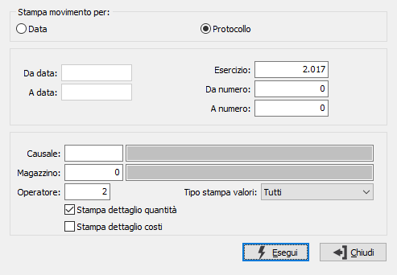

Lista prima nota
Il programma produce un report contenente la prima nota di magazzino coerente con i parametri inseriti dall’utente. Omettendo l’indicazione del codice operatore, vengono stampati tutti i movimenti; inserendo invece il codice di un operatore, vengono stampati solo i movimenti inseriti dall’operatore corrispondente al codice inserito.
È possibile ordinare la stampa in base alla data oppure al numero di protocollo, limitando la selezione ai movimenti relativi ad una sola causale di magazzino, ad uno specifico magazzino o ad entrambi i criteri di filtro.

STAMPA MOVIMENTI PER: definisce i criteri di ordinamento della stampa. Spuntare a scelta uno dei valori ammessi: Data; Protocollo.
DA DATA: campo attivo in caso di ordinamento per data; inserire la data da cui si intende iniziare la stampa dei movimenti di magazzino. Confermando a vuoto la stampa inizia con il primo movimento presente.
A DATA: campo attivo in caso di ordinamento per data; inserire la data con cui si intende terminare la stampa dei movimenti di magazzino. Confermando a vuoto la stampa termina con l'ultimo movimento presente.
ESERCIZIO: campo attivo in caso di ordinamento per protocollo; inserire l'anno di cui si intende stampare i movimenti di magazzino. Deve essere imputato nel formato esteso a 4 cifre; non si può confermare a vuoto su questo campo.
DA NUMERO: campo attivo in caso di ordinamento per protocollo; inserire il numero di protocollo del movimento da cui si intende iniziare la stampa dei movimenti di magazzino. Confermando a vuoto la stampa inizia con il primo movimento presente all'interno dell'anno specificato.
A NUMERO: campo attivo in caso di ordinamento per protocollo; inserire il numero di protocollo del movimento con cui si intende terminare la stampa dei movimenti di magazzino. Confermando a vuoto la stampa termina con l'ultimo movimento presente all'interno dell'anno specificato.
CAUSALE: eventuale codice della causale di magazzino a cui si vuole restringere la selezione per la stampa della prima nota. Sul campo è attiva la ricerca (F9) sulla tabella Causali di magazzino.
MAGAZZINO: eventuale codice del magazzino a cui si vuole restringere la selezione per la stampa della prima nota. Sul campo è attiva la ricerca (F9) sulla tabella Magazzini.
OPERATORE: codice dell’operatore attivo, proposto automaticamente e modificabile. Confermandolo, vengono stampati solo i movimenti registrati da tale utente. Cancellandolo, vengono stampati tutti i movimenti prescindendo dall’utente che li ha inseriti.
TIPO STAMPA VALORI: consente di stampa i movimenti in base al loro valore: tutti, solo con valore diverso da zero, solo con valore zero.
STAMPA DETTAGLIO QUANTITÀ: check box. Se contiene la spunta, indica che nella stampa sarà incluso il dettaglio delle quantità.
STAMPA DETTAGLIO COSTI: check box. Se contiene la spunta, indica che nella stampa sarà incluso il dettaglio dei costi.